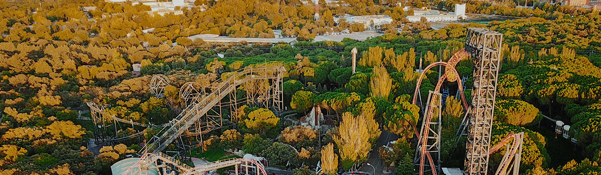

> 인재채용 > 직무소개
직무소개
롯데의 비전을 함께 할 역량있는 인재를 찾습니다.
-
- 파크운영
- 직무내용
- 파크운영은 경영기획‚ 신규사업‚ 경영지원‚ 마케팅‚ 영업부문의 관리직무에 배치되어 영업활성화 및 테마파크 조직 운영의 전반적인 업무를 담당합니다. 파크운영 관리자로 선발된 인재는 경영관리 및 운영 등 각 부문에서 업무를 수행하게 되며‚ 향후 당사의 중심관리자로서 역량을 키워나가게 됩니다.
- 필요자질
- – 필요 역량 : 성실성‚ 책임감‚ 기획력
– 관련지식 또는 자격증 : 경영‚경제관련 기본지식 / 노무사‚ 회계사 등 경영‚경제관련 자격증
– 관련학과 : 사회과학계열(경영학‚ 경제학‚ 마케팅 등)‚ 법정계열(법학‚정치외교학‚행정학)‚ 인문계열‚ 어문계열 - 배치부서
- 경영기획부문‚ 신규사업부문‚ 지원부문‚ 마케팅부문‚ 영업부문
- 
- 파크운영
- 직무내용
- 시설관리는 시설안전(시설관리‚ 건축‚ 설비‚ 전기‚ 방재)업무에 배치되어 각 종 시설물의 유지 및 보수에 관련된 업무를 담당 합니다. 파크 내 안전점검‚ 사고예방‚ 시설물 유지보수‚ 에너지 절감 등의 업무에 종사하며 기존 건물의 리모델링‚ 증축공사‚ 매장 인테리어 공사 등에 참여합니다. 또한 어트랙션정비 직무는 테마파크에서 가장 중요한 부분 중 하나인 어트랙션의 유지 및 보수를 하는 업무 입니다. 다양한 기종의 유지/보수를 맡고 있습니다. 영업 전 모든 어트랙션에 대하여 일일 예방점검을 시행하고‚고장 및 결함을 사전에 적출하여 이에 따른 원인을 상세히 파악 후 재발방지 대책에 대하여 일일/월간/년간 보수계획을 수립‚ 정비 및 개선함으로써 안전하고 효율적인 운영을 지원 합니다.
- 필요자질
- – 필요 역량 : 책임감‚ 성실성‚ 추진력
– 관련지식 또는 자격증 : 건축 등 시설관련 지식 / CAD‚ 건축기사 등 각종 시설관련 자격증
– 관련학과 : 기계‚ 전자‚ 전기‚ 건축공학과 - 배치부서
- 시설안전부문
채용프로세스
일반적으로 아래와 같은 전형으로 엄정하게 진행되며‚ 일부 채용은 약간의 차이가 있을 수 있습니다
-
서류제출
-
서류전형
-
면접전형
-
최종확정